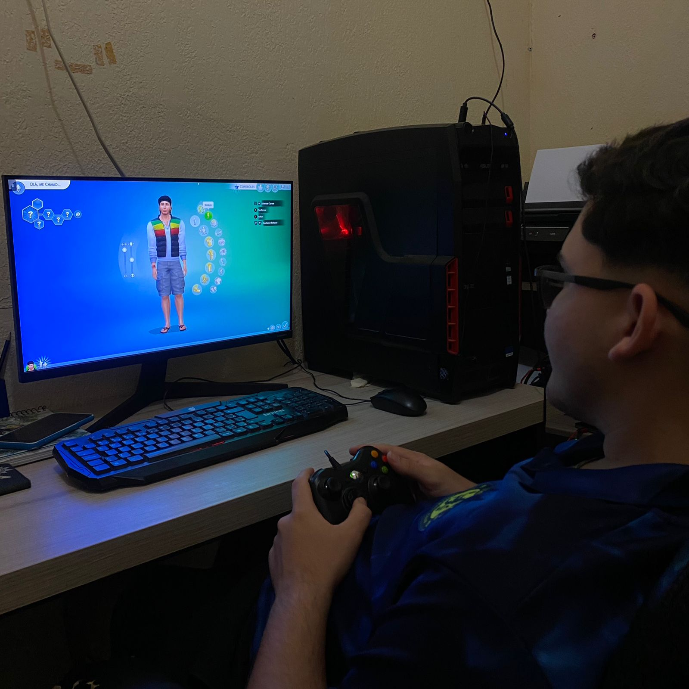
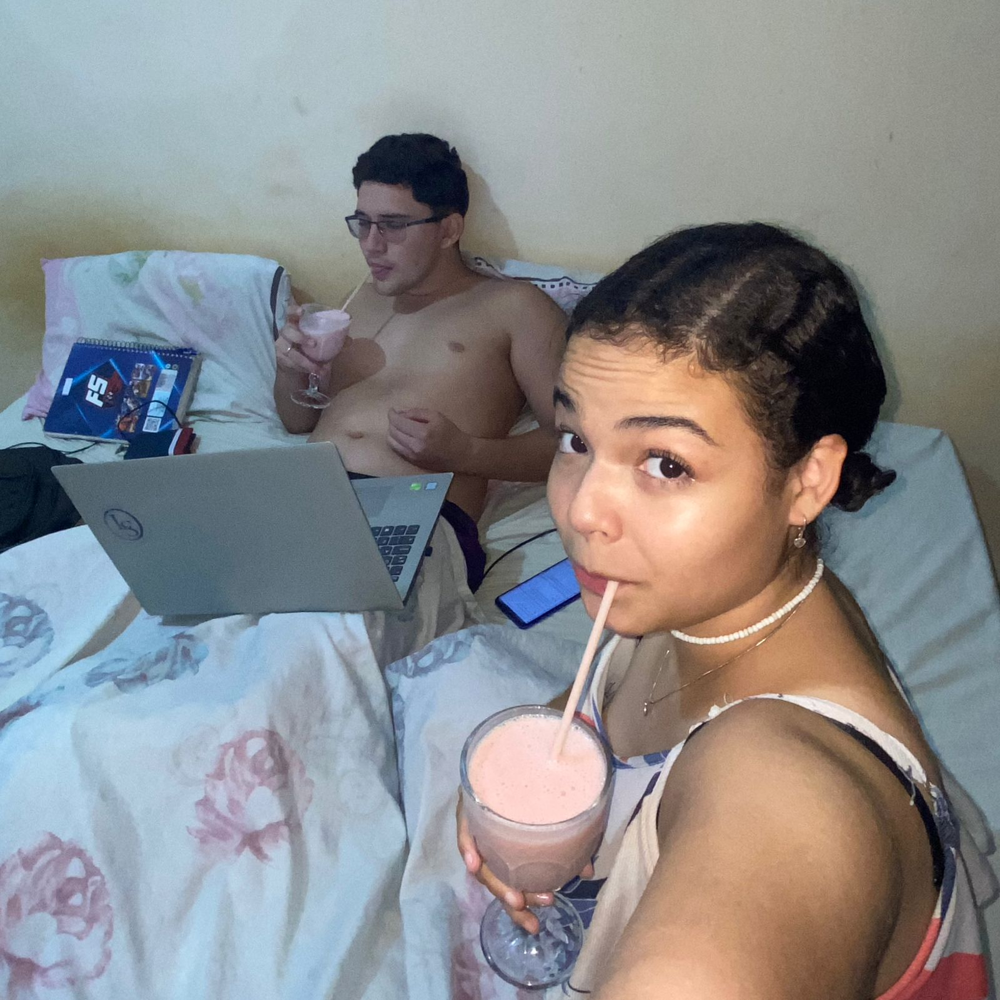
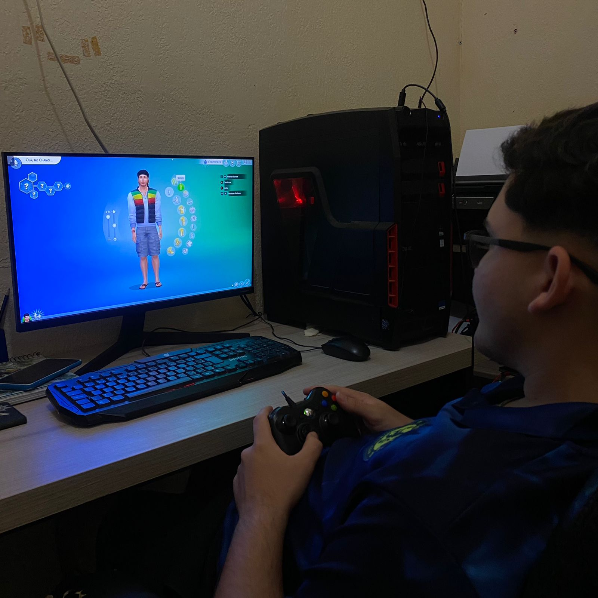
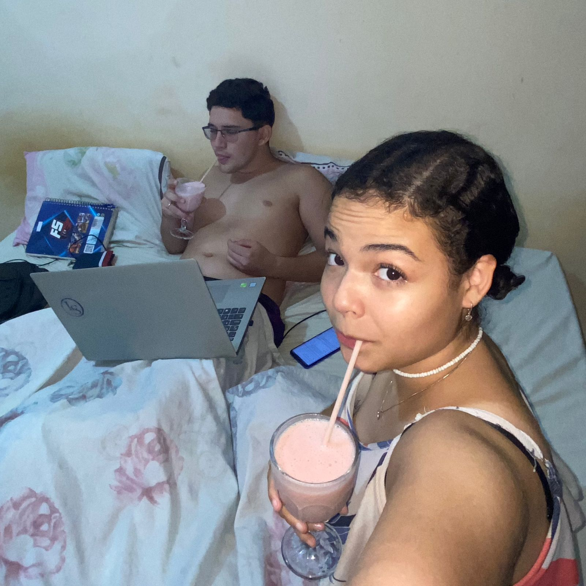

Uma Carta para Você
Esses últimos tempos têm sido um desafio para nós dois no que diz respeito a nos conhecermos ainda mais e, o mais importante, a nos adaptarmos um ao outro e às nossas rotinas. Você me faz muito feliz, sabia? Um dos pontos que menos demonstro com frequência é a minha gratidão e o meu amor por você. Sei que isso pode fazer falta e que, de repente, você gostaria de receber mais sinais de reciprocidade e carinho. Vou me esforçar para melhorar nesse aspecto, por você, por mim, por nós.
Hoje (13/10) estaremos juntinhos à noite, e quero que seja leve, bom e agradável. Estarei levando meu UNO da Barbie para jogarmos, o baralho para brincarmos de três, dois, um, e meu dominó. Lembra de quando brincávamos e morríamos de rir? Vamos nos permitir viver mais momentos assim! Claro, você ainda vai maratonar os vídeos do TikTok que tenho para te mostrar, mas o que quero para hoje é menos celular. Estamos muito conectados quando estamos juntos, e sei que posso ter um vício (KKKKK), mas vamos nos divertir, meu amor. O nosso amor quebra barreiras; você é o meu "Casal Bem Louco".
Eu te amo eternamente, meu pedacinho de pão de ló. 🤍
 


